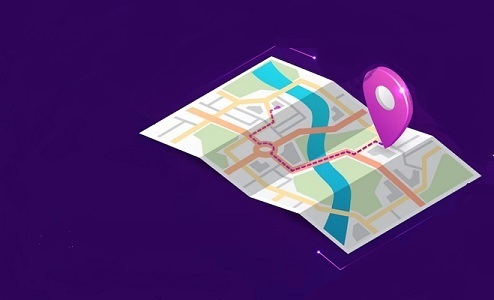

Conhecendo a instituição

Onde conseguir apoio?
comunidade acolhedora, sempre há alguém disposto a ajudar!
Fatec-SP - Av. Tiradentes, 715
Metrô Tiradentes
"Não existem métodos fáceis para resolver problemas dificeis."-René Descartes
Antes de desistir da programação veja esse vídeo
"Todo mundo nessa cidade deveria aprender a programar pois isso te ensina a pensar."-Steve Jobs
Por que você aderiu a este universo?
Os "Programadores anônimos" são uma rede de apoio para programadores, sabemos o quanto essa área pode ser dificil de se lidar! Com toda a pressão psicológica, o mercado volátil e a necessidade constante de se atualizar, muitos Devs acabam entrando em colapso. Boderline, depressão, ansiedade, são apenas alguns dos problemas quie surgem na vida de um Dev sobrecarregado, portanto...Estamos aqui para mostrar que nem tudo tem que ser dificil com ajuda, dedicação e apoio você pode descobrir um mundo incrivel no desenvolvimento de software.
Aqui te ajudamos com:
- Deixe um desabafo em nosso formulário
- Converse com alguém em nossa instituição
- Contrate nossos serviços para fazer algum projeto que você não conseguiu